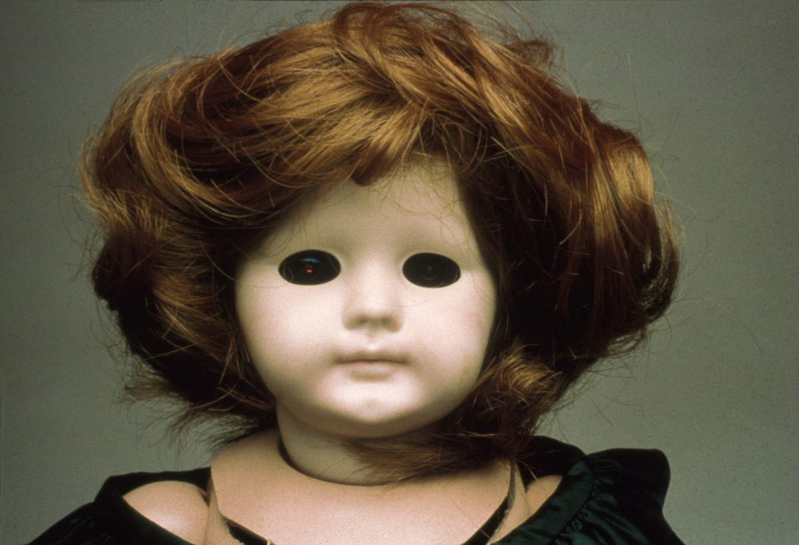
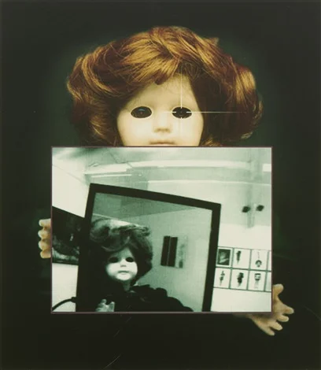
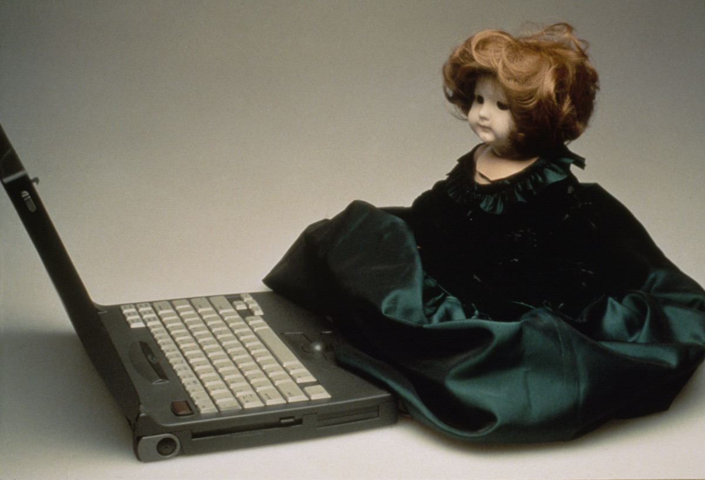
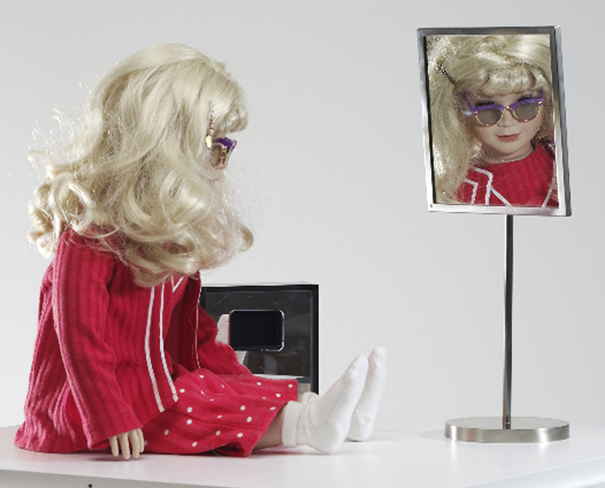
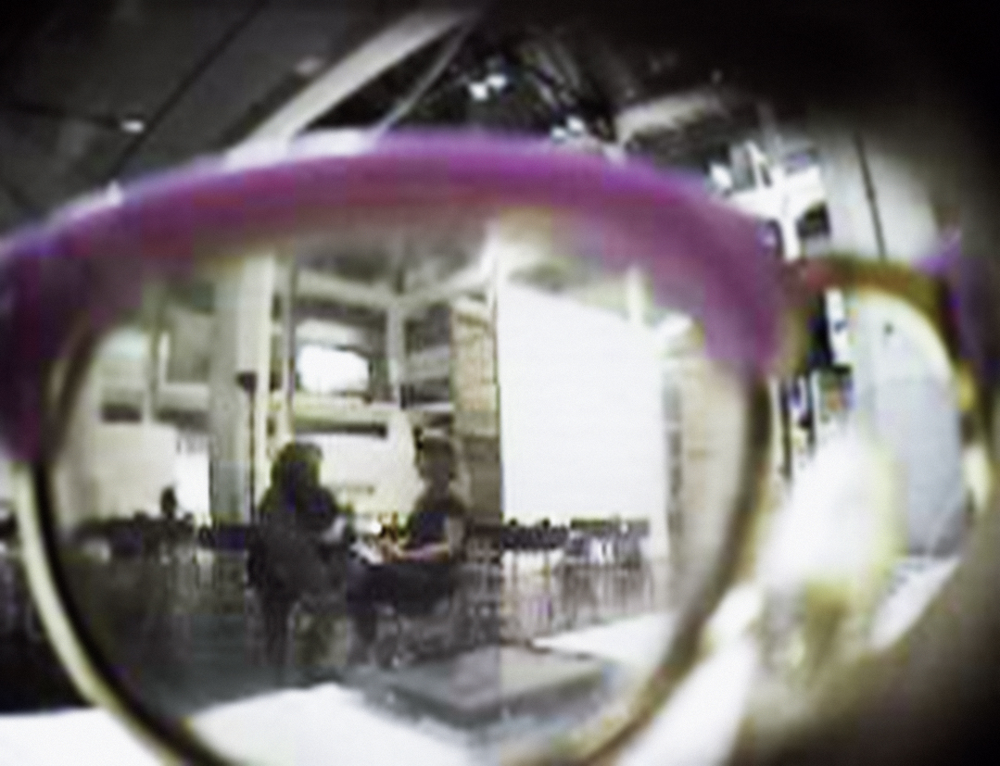

THE DOLLIE CLONE SERIES (1995 - 1998)
LYNN HERSHMAN LEESON
custom-made dolls, clothing, glasses, webcam, surveillance cameras, telerobotic head rotating system
22 x 8 x 8 in


SURVEIL.
BE A VOYEUR.
OBJECTIFY YOUR VIEWER.
REJECT PASSIVITY.
ARTIFICIALLY CONSTRUCTED FEMALE IDENTITY.


TILLIE THE TELEROBOTIC DOLL
LYNN HERSHMAN LEESON
‘Tillie is the older sibling. Her birth was slow and painful. However, the brain could not be duplicated into a family of humanoids that could be fleshed out through the Net’


Cyberoberta
CYBEROBERTA
LYNN HERSHMAN LEESON
“When the dollie clones were born, I thought to convert Roberta, who had been exorcised about five years earlier,
and have her re-emerge as this kind of evil twin that would steal information from Tillie when they were in some proximity.”
Leeson adopted many personalities, notably
Roberta Breitmore,
who she felt the need to exorcise in 1978. She lived as Roberta between 1973 and 1978, even creating an ID, having therapist
appointments, and public interactions.
through CyberRoberta’s eyes
“Moments: A History of Performance in 10 Acts” (2011)
TWO IDENTICALLY PROGRAMMED SISTERS
IMAGES CAPTURED THROUGH THEIR EYES
WEBPAGE REFRESHED ~30 SECONDS
USERS OF WEBPAGE ABLE TO SWIVEL DOLLS' HEADS
DOLLS ARE NOT ONLY OBJECTS, BUT ALSO AGENTS WATCHING THOSE WHO WATCH THEM